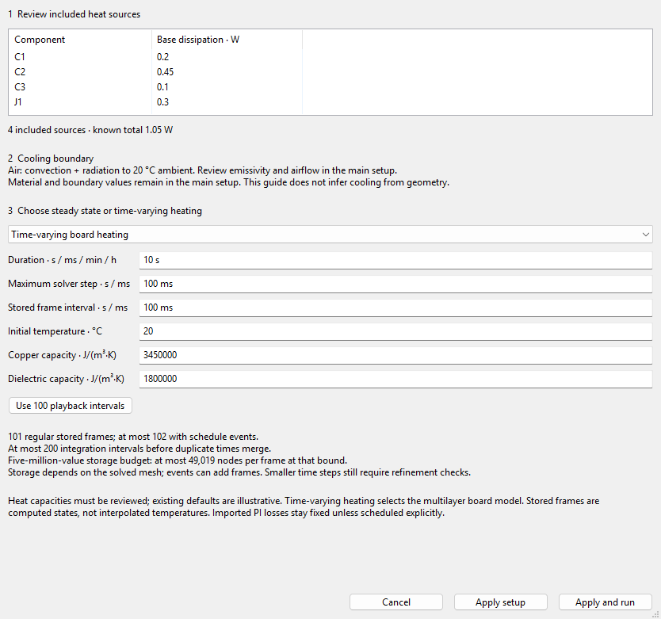
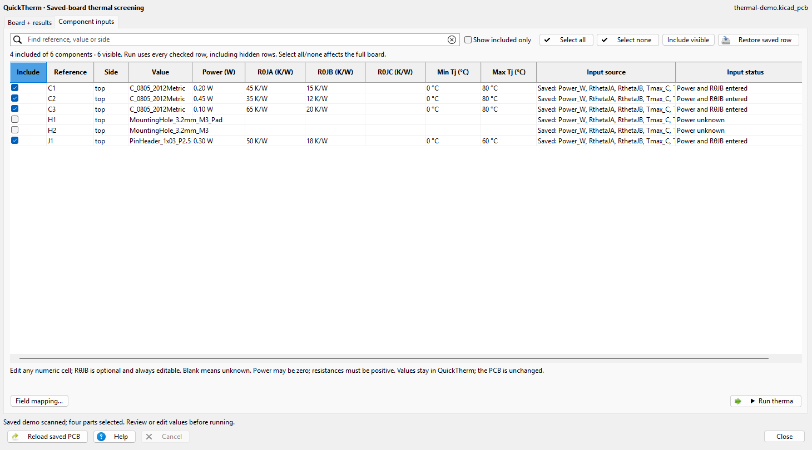
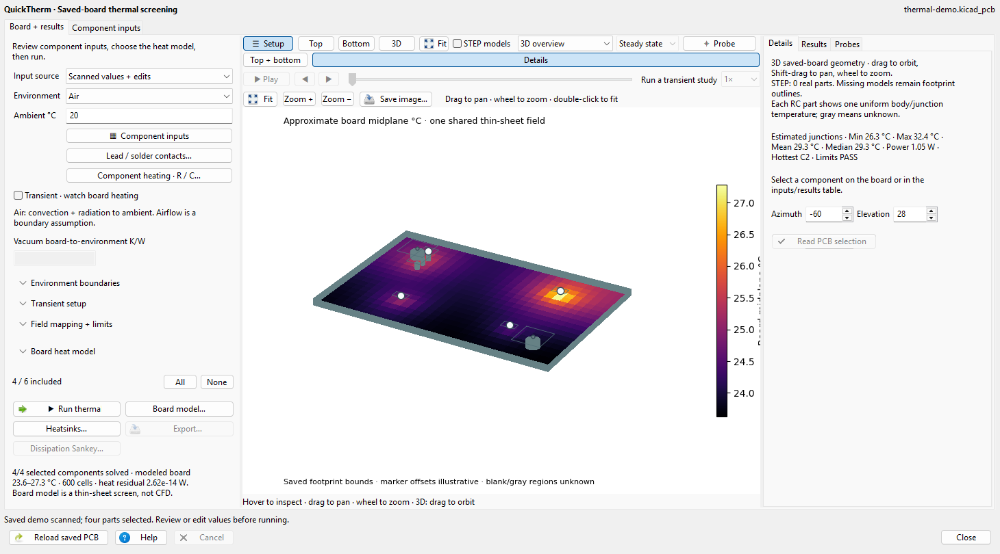
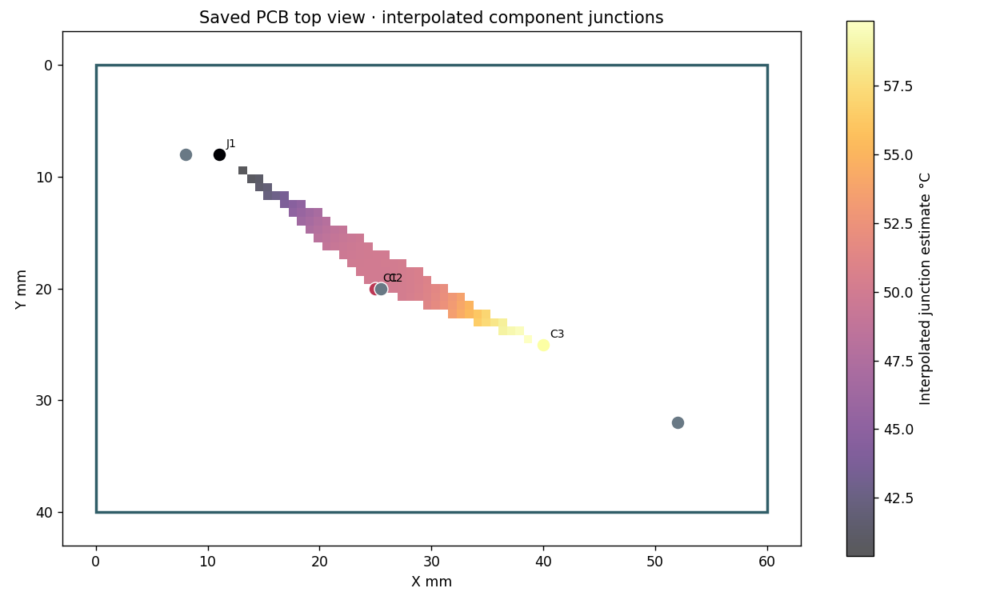

Review Component inputs, then open Heating study…. The guide lists included watts and unknown sources, retains cooling assumptions, and selects steady state or time-varying board heating. Apply setup retains the choices; Apply and run follows normal validation and the cancellable worker. It does not infer material properties or cooling paths.
Time inputs accept seconds, ms, min or h. Review heat capacities and initial temperature; defaults are illustrative. Live advice bounds computed frames, integration intervals and the five-million-value storage budget. Events can add frames and the solver checks exact limits. Use 100 playback intervals explicitly chooses duration/100 for stored solutions; it is not convergence proof. Refine mesh and time independently.

Actual KiCad 10.0.6 / wxPython 4.2.2 native client capture from unchanged public thermal-demo.kicad_pcb: four sources, 1.05 W; 10 s duration, 0.1 s solver/frame intervals and C2 off at 4 s. Capacities and cooling are declared illustrative inputs, not measurements. See README for source hash and capture provenance.
Power steps… accepts actual Initially W and After W. Blank switch time retains constant power. Watts convert to existing source multipliers; base powers remain unchanged. Enter positive base power in Component inputs before scheduling a zero/unknown source. Applying chooses held steps. Multi-event profiles stay in Advanced schedules + sinks; ramps and imported copper-loss source IDs remain explicit.
The separate independent-component RC report includes sortable/searchable per-unit peak/final summaries, exact stored-time selection, row-to-trace selection and pinned sample probes. Missing limits say NOT EVALUATED. This separate lumped screen is not the spatial board transient and adds no copper-field physics.
Begin with Input source → Scanned values + edits. The Component inputs tab shows included references, side, saved values, power, thermal paths and limits in one editable table. Choose Saved fields only only when those mapped properties are complete. Changes stay in QuickTherm; the PCB is not edited.
On Board + results, use Setup to hide settings, Top/Bottom/3D to change the view, and Top + bottom for a paired workspace. Details, Results and Probes retain their own evidence. Transient · watch board heating enables the declared time-dependent model; review Transient setup, power steps and capacities before running. Playback frame spacing and numerical time-step accuracy are separate checks.


Actual native 3.6.38 workspace captures from the unchanged public thermal demo. Four declared sources total 1.05 W; this illustration uses 20 °C ambient, 35 W/(m·K) effective sheet conductivity, emissivity 0.8 and 10 m/s airflow. STEP models are disabled. The approximate midplane field and junction estimates are model outputs, not measurements. Capture provenance and limits.
Leave Automatic mesh checked in Board model for geometry-based sizing. Multilayer mode refines actual rectilinear intervals around heat sources, pad/fixture contacts, barrels and copper-region bounds. Source/contact targets take priority under tight budgets. Read effective X/Y cells, min/max sizes and unresolved/omitted-region warnings after a run; these also appear in HTML/JSON reports. Uncheck it for the manual long-axis grid. CLI --config study.json --auto-mesh uses the same thermal_network_settings.mesh_mode="auto"; --mesh-mode manual restores manual settings.
Default limits are 50,000 cells across all layers, four split passes, 511 intervals per axis and 2048 sizing regions; storage/sink nodes remain within the existing 150,000-node hard limit. This is a geometry heuristic, not field-error adaptivity or convergence proof. Tiny/rotated conductors, plated-wall thickness and package solids remain limited. Thin-sheet auto sizing is uniform; CalculiX stays manual. Transient playback uses one spatial grid. Explicit grid sweeps retain their requested levels and reject identical actual meshes; refine spatial mesh and time step separately.
Run thermal, then choose Dissipation Sankey… for an offline diagram. UI and CLI HTML reports always include it. Individual parts and retained copper/contact I²R sources flow left to right into total known dissipation (W). Hover/focus for values or click to pin a probe. Large studies group sources after the largest 30; a complete table keeps individual watts. Known zero sources and unknown/excluded parts are listed separately. Missing sources make the total incomplete. The diagram shows the saved steady/reference heat inputs, independent of playback time; it does not represent heat-transfer paths, environmental outflow or stored transient energy. Enter component dissipation once and avoid duplicating imported Joule heat.
Open a saved PCB, select the dissipating components, and enter explicit power and thermal resistance for each one with Component inputs. No custom PCB fields are required, and the board is not changed. If the saved footprints already contain complete thermal values, choose Saved fields only instead. Review the coverage and assumptions before interpreting temperatures.
Component labels appear only for the selected part or the part under the pointer. Select a part in the map or table to keep its reference and junction estimate visible; hover another part for one temporary label. Moving away clears the hover label. This applies to the main map, paired top/bottom workspace, 3D overview and interactive report. Unknown junction temperatures stay unknown.

Large boards keep three printable plots: top, bottom and component temperatures. All computed fields, the interactive 3D board and probes remain in the HTML and complete JSON. CLI --extended-report-snapshots also prints 3D, contours and every layer; it can take substantially longer and does not change numerical mesh resolution.
Component-only results also export HTML/JSON without a board heat model. The component estimates remain available; board-field and mesh acceptance evidence stay unavailable.
Under the board-model controls select CalculiX 3D · fixed lower face, use Locate CalculiX… to select ccx, then Check solver setup. Save the board, select top-side power sources, and enter or map their dissipated power. The model needs a fixed lower-face temperature and explicit material and mesh values. RθJB is optional; without it the board field can be solved, but package junction temperature and junction-limit checks remain unknown. Gmsh may need a first-time install in the private runtime. Vias, mounting contacts, heatsinks, convection and radiation are outside this mode.
A small colored quadrilateral can be partial junction interpolation. The dashed boundary is the same-side component-anchor hull; blank regions are unknown. It is not a board-surface solution and is not extrapolated across the PCB.
Click Whole-board study… to enable and reveal the existing physical model setup. The action retains model choices, materials, entered values, mappings and scope. Review conductivity, saved thickness, cooling and fixture boundaries, and include every actual heat source before running. Missing physics is never inferred. An available solved board/layer field is preferred; a later deliberately selected view is retained.
Known finite-volume cells display through their declared mesh edges; smooth continuity needs neighboring known samples. Cutouts, drills and unknown cells remain blank. Junction and sampled CalculiX fields keep their own support limits. Smooth colors do not establish convergence or physical qualification.
Reloading the same saved board retains entered values, valid explicit mappings and checked references, and clears the old result/export. Unique recognized field aliases may be suggested; ambiguous aliases stay blank. A single-component board initially selects its reference without supplying power or thermal resistance.
Leave STEP models checked when running to load saved component solids through KiCad CLI and FreeCAD. Install FreeCAD or set WAYRICAD_THERM_FREECAD_PYTHON to its Python runtime. Model paths use the project's KiCad variables; WRL files need a STEP twin. Missing models remain footprint outlines and are listed in the report. The saved PCB and source models are unchanged.
Choose the multilayer board model and open Lead / solder contacts…. Each path joins one saved pad copper face to the part's declared body or junction node. Select the part, pad and copper layer, then enter reviewed dimensions and thermal conductivity. Use cylinder, rectangular lead or spherical ball; a ball is a symmetric truncated sphere whose height is less than its diameter. Repeat a Path ID for ordered lead and solder segments in series. Different paths conduct in parallel, with heat sharing computed from their resistances and pad temperatures. Pads on different electrical nets can carry heat from the same thermal node.
Configure each contacted part in Component heating · R / C…. Its aggregate resistance is zero because the explicit paths replace it; steady studies can use zero capacity, while transient studies require a positive capacity in J/K. Remove overlapping RθJB and single-pad proxy inputs. Direct package cooling remains separately explicit. The saved pad area, drills and copper layers constrain the contact; missing, ambiguous, duplicated or oversized contacts are rejected. The selected-part panel and report show path resistance, pad temperature and signed heat flow.
Matching PI package-contact losses may be imported with copper losses. Enter both electrical resistivity and thermal conductivity for those paths. Geometry, materials, pad identities and saved-board hash must match; I²R is checked. Joint heat is counted once and distributed to package and board using the series thermal resistances. Extra lumped resistance has no heat location and is rejected for this transfer. Review the contact mesh with spatial refinement. These are constant-property, massless, one-dimensional lead and solder paths; internal solid gradients, solder heat storage and temperature-dependent electrical feedback are outside this mode.
Enable Transient · watch board heating, then open Component heating · R / C…. Enter reviewed R (K/W), C (J/K), body/junction meaning and optional initial temperature. Component power enters its storage node once and flows to the board or virtual sink. A known thermal contact pad uses its copper geometry; blank uses the footprint bounds as a proxy. Enter exposed area, convection h and emissivity together for direct package cooling. Vacuum requires h=0. Blank surface values do not add a cooling path. STEP geometry cannot infer thermal materials. Each RC part has one temperature; body values leave junction limits unknown.
For transient playback, the Max solver step bounds integration steps and Stored frame interval requests actual computed frames. The solver lands on each stored frame, so a smaller frame interval also shortens integration steps. Native defaults are 10 s duration and 0.1 s for each interval. Play at 0.25×, 1×, 5× or 20×, scrub, or use Previous/Next to inspect stored frames in the native view and offline report. Playback holds computed temperatures between frames. Longer studies or dense meshes may exceed 1000 stored frames or five million node values; increase the frame interval or reduce the mesh when the solver reports the limit. Compare solver-step and mesh refinements independently.
Import PI copper losses… reads a solved 2.5D JSON report from the exact saved PCB. Planar and barrel I²R heat enters the copper cells, with stackup, contact and watt conservation checks. Matching explicit lead/solder paths retain their heat separately. Unsupported or unresolved transfers are rejected. Component and delivered load power are separate; enter actual component dissipation without counting it twice. Imported losses stay fixed during playback unless scheduled. Existing Quick PI electrothermal studies support copper feedback; explicit package contacts currently require this fixed-operating-point transfer. Internal component gradients and CFD are outside this RC model.
Airflow, board conduction, heatsinks and fixed-temperature boundaries need explicit assumptions. Review source coverage, space/time refinement and conservation; numerical checks do not establish hardware accuracy.
The full step-by-step guide is included locally.
Find… searches mounting contacts and retains checked hidden matches. Ctrl/Shift selects multiple component rows. Their plot highlights update without rebuilding the field or resetting the camera. PCB selection of pads identifies their parent components. Input changes cancel active work and discard late results.
Drag either board-side divider to resize Setup or Details. Use their toolbar buttons to hide or reopen them. Expanded setup sections scroll independently. Results and Probes tables scroll horizontally to reach every column.
Export HTML for interactive board views and exact probes. Use Print / save as PDF for browser printing. For a static PDF without a browser, run python -m wayricad_runtime.tool_cli report-pdf review.html --output review.pdf --evidence review.json after installing wayricad[reports]. The exporter retains text, tables and embedded PNG/JPEG figures. Canvas, SVG and unsupported views are explicitly listed as retained in HTML. Any tool JSON can use python -m wayricad_runtime.tool_cli report result.json --html review.html --pdf review.pdf; no analysis is recomputed.